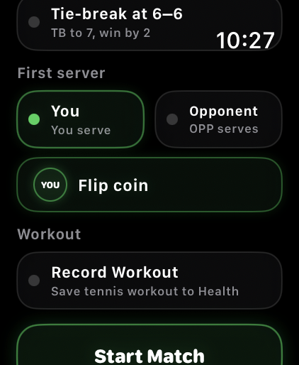
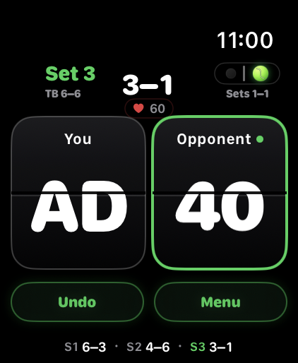
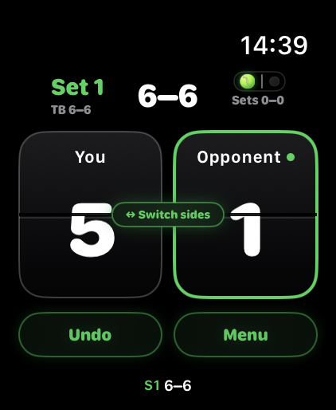
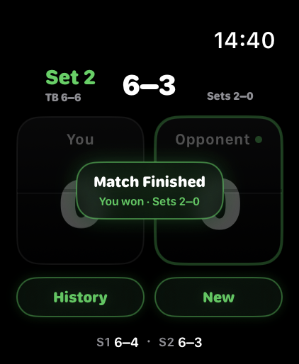
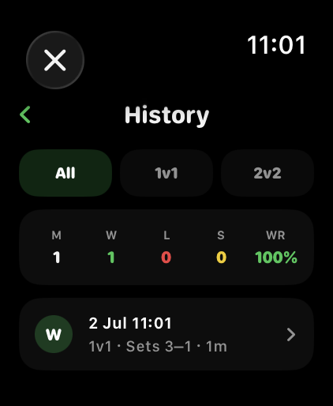
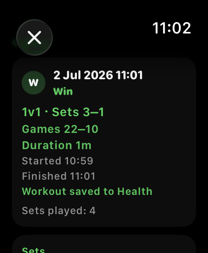

Schnelle Punkteingabe
Tippe direkt auf deinen Punktestand oder den Punktestand des Gegners. Große Karten machen das Zählen auch während Ballwechseln schnell.
Tennis Score Wizard bringt eine echte Tennis-Anzeigetafel auf die Apple Watch: Match einrichten, ersten Aufschläger wählen, jeden Punkt zählen, Fehler rückgängig machen, unfertige Matches stoppen und gespeicherte Ergebnisse später prüfen.
Ein kompakter Scoring-Ablauf, der zuerst für die Apple Watch gedacht ist — für Spieler, die während des Spiels schnelle Bedienung brauchen.
Tippe direkt auf deinen Punktestand oder den Punktestand des Gegners. Große Karten machen das Zählen auch während Ballwechseln schnell.
Wähle Einzel oder Doppel, Best of 3 oder Best of 5 sowie Advantage- oder Tie-Break-Satzregeln.
Nutze den eingebauten Münzwurf, um vor Matchbeginn den ersten Aufschläger zu bestimmen.
Beendete und gestoppte Matches werden ohne Account lokal auf deinem Gerät gespeichert.
Wichtige Screens vom Setup bis zur Matchhistorie.

Wähle Matchtyp, Matchlänge, Satzregel und ersten Aufschläger, bevor das Scoring beginnt.

Zähle Punkte über zwei große Karten, während Spiele, Sätze, aktueller Aufschläger und Undo sichtbar bleiben.

Der Ball oben auf dem Bildschirm markiert je nach Punktstand die nächste Aufschlagseite für dich oder den Gegner.

Bei 6–6 wird der Tie-Break klar angezeigt, inklusive Hinweis zum Seitenwechsel.

Wenn das Match entschieden ist, zeigt die App Gewinner, Satzstand und Schnellaktionen für Historie oder Neues Match.

Prüfe Satzstände, Tie-Break-Punkte und Ergebnisstatus und lösche alte Einträge bei Bedarf.
Wähle Einzel oder Doppel, Best of 3 oder Best of 5, die Satzregel und dann den ersten Aufschläger manuell oder per Münzwurf.
Tippe auf deine große Punktekarte, wenn du einen Punkt gewinnst. Tippe auf die Gegnerkarte, wenn der Gegner punktet. Punkte, Spiele, Sätze und Tie-Breaks werden automatisch aktualisiert.
Während eines laufenden Matches bietet Menu Zugriff auf Aktionen wie unfertiges Match stoppen, Historie öffnen oder neues Match starten. Abgeschlossene Matches werden automatisch erkannt, sobald die erforderliche Satzanzahl gewonnen wurde.
Sobald eine Seite genug Sätze für die gewählte Matchlänge gewinnt, zeigt die App automatisch Match Finished und speichert das Ergebnis in der Historie. Du musst ein abgeschlossenes Match nicht manuell beenden.
Undo nimmt den zuletzt gezählten Punkt zurück und stellt den vorherigen Matchzustand wieder her, inklusive Punkte, Spiele, Sätze, Aufschläger und Aufschlagposition.
Wenn du aufschlägst, zeigt der Tennisball deine Aufschlagseite. Wenn der Gegner aufschlägt, zeigt er die gegnerische Aufschlagseite aus deiner Sicht auf der Apple Watch.
Gespeicherte Matches nutzen kompakte Tennisnotation, damit Ergebnisse auf der Apple Watch gut lesbar bleiben.
Win bedeutet, dass du das abgeschlossene Match nach Sätzen gewonnen hast. Loss bedeutet, dass der Gegner nach Sätzen gewonnen hat.
Stopped bedeutet, dass das Match vor dem normalen Ende gespeichert wurde. Nutze Menu, um ein nicht abgeschlossenes Match zu stoppen.
S1, S2 und S3 bedeuten Satz 1, Satz 2 und Satz 3. S1 6–3 heißt zum Beispiel, dass der erste Satz 6 Spiele zu 3 endete.
TB zeigt die Tie-Break-Punkte innerhalb eines 7–6-Satzes. 7–6 · TB 7–3 bedeutet zum Beispiel, dass der Satz 7–6 gewonnen wurde und der Tie-Break 7–3 endete.
Wenn ein gestopptes Match eine klare Satzführung hat, zeigt die Historie, wer nach Sätzen führte. Bei Gleichstand vergleicht die App Spiele und, falls vorhanden, Tie-Break-Punkte.
Bei gestoppten Matches wird der aktuelle unfertige Satz gespeichert, wenn er begonnen wurde. So bleibt der echte Matchkontext erhalten, zum Beispiel S3 0–1.
Nein. Die Matchhistorie wird lokal auf deinem Gerät gespeichert.
Ja. Wähle im Setup vor Matchbeginn Doppel aus.
Ja. Wähle No Tie-break im Setup, um einen Advantage-Satz zu spielen.
Ja. Gespeicherte Matches können in der Historie gelöscht werden.
Die Matchhistorie wird lokal auf deinem Gerät gespeichert. Die App benötigt keinen Account und überträgt, verkauft oder teilt keine personenbezogenen Daten.
Kontakt: tennisscorewizard@gmail.com